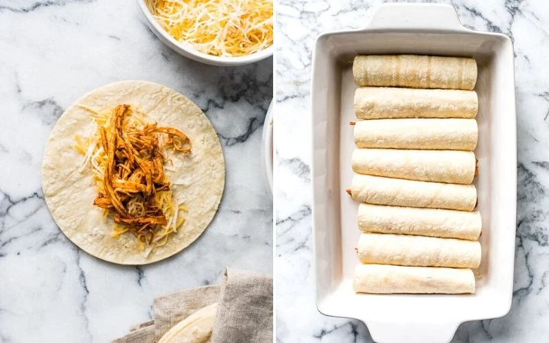

The juciest, most tasty, chicken enchiladas

Description
These Easy Chicken Enchiladas make the best Mexican dinner ever!
They’re stuffed with shredded chicken and cheese, topped with an easy red enchilada sauce and baked for 20 minutes.
This homemade classic is an all-time family favorite that’s great for easy weeknight meals.
Ingredients
- Tortillas
- Enchilada Sauce:
- Shredded Chicken
- Shredded Cheese:
Steps
- Preheat oven to 350ºF.
- In a large bowl, combine cooked shredded chicken with 1/4 cup enchilada sauce. Season with salt and pepper to taste.
- Warm the tortillas in a microwave for 1 minute, flipping the them halfway through until they’re warm and pliable.
- Assemble the enchiladas by filling each tortilla evenly with the shredded chicken mixture and a generous pinch of shredded cheese. Roll them tightly to close and place in a large baking dish seam side down.
- Pour the remaining enchilada sauce over the tortillas and then top them with the remaining cheese.
- Bake for 20 minutes, until cheese is melted and bubbly. Serve.